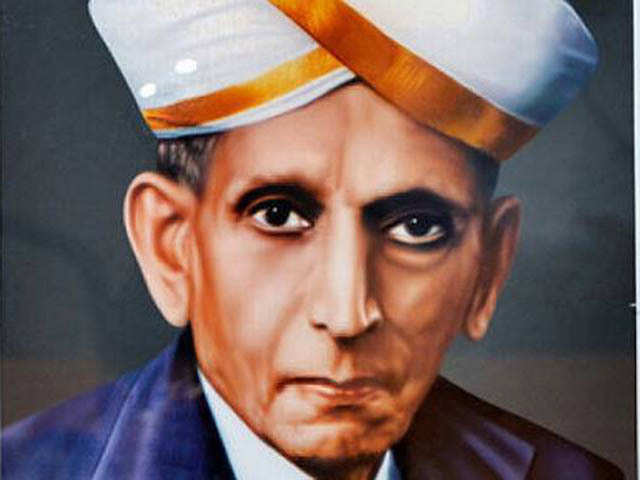

Sir Mokshagundam Visvesvaraya was an eminent engineer and statesman and played a key role in building of modern India. Sir M. Visvesvaraya was born on September 15, 1860 in Muddenahalli village in the Kolar district of the erstwhile princely state of Mysore (present day Karnataka). His father Srinivasa Sastry was a Sanskrit scholar and Ayurvedic practitioner. His mother Venkachamma was a religious lady. He lost his father when he was only 15 years old. Visvesvaraya completed his early education in Chikkaballapur and then went to Bangalore for higher education. He cleared his B.A. Examination in 1881. He got some assistance from the Government of Mysore and joined the< Science College in Poona to study Engineering. In 1883 he ranked first in the L.C.E. and the F.C.E. Examinations (equivalent to B.E. Examination of today).
